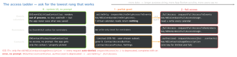
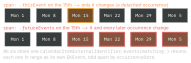

ios-platform · folio
In one line: Calendars, reminders and contacts are private databases shared by every app.
Climb the access ladder only as far as the feature needs: a system UI that needs
no permission (EKEventEditViewController, CNContactPickerViewController) → a
partial grant (.writeOnly events, iOS 17 · .limited contacts, iOS 18) →
full access. One long-lived EKEventStore / CNContactStore; on “store changed”, refetch.
Download PDF Print view LaTeX source


EventKit
- One
EKEventStore, created once and kept: expensive to initialise; objects from one store must not be used with another. Fetched before the grant?reset()after it. - Model:
EKSource(iCloud, Exchange, CalDAV, local) →EKCalendar(allowsContentModifications) →EKCalendarItem=EKEvent|EKReminder. EKEvent:startDate/endDate,isAllDay,timeZone(nil= floating, “lunch at noon” in any zone),recurrenceRules,alarms(EKAlarm(relativeOffset:), or a geofence:structuredLocation+proximity).EKReminder:dueDateComponents(DateComponents, not a Date),isCompleted.- Fetch:
predicateForEvents(withStart:end:calendars:)— span capped at 4 years, silently — thenevents(matching:): synchronous (off main), committed only, unsorted (compareStartDate); a recurring event returns oneEKEventper occurrence. Reminders:fetchReminders(matching:completion:)is async. - Save:
save(_:span:commit:),remove(_:span:commit:). Batch:commit: false× N, then onecommit();reset()drops the uncommitted. - Changes:
.EKEventStoreChanged(any app, any sync) → refetch the visible range. One object you are editing:refresh()—false= deleted.
Example — write-only, weekly, with an alarm
let store = EKEventStore() // app-wide, created once
func addSwimLessons(start: Date) async throws {
guard try await store.requestWriteOnlyAccessToEvents() else { return }
let e = EKEvent(eventStore: store)
e.title = "Swim lesson"
e.calendar = store.defaultCalendarForNewEvents // user picks real one
e.startDate = start; e.endDate = start + 45 * 60
e.addRecurrenceRule(EKRecurrenceRule(recurrenceWith: .weekly,
interval: 1, end: EKRecurrenceEnd(occurrenceCount: 10)))
e.addAlarm(EKAlarm(relativeOffset: -15 * 60)) // 15 min before
try store.save(e, span: .futureEvents, commit: true)
} // write-only: cannot read this event back afterwardsIdentifiers — which one to store
eventIdentifier | local; changes if the event moves calendar; event(withIdentifier:) gives a series’ first occurrence |
calendarItem-Identifier | local, unique in this database |
calendarItem-ExternalIdentifier | the server’s id, same on every device; shared by all occurrences (+ start date); duplicates possible (ICS import, shared + invited) |
Saving an edit to a recurring series

Contacts
CNContactStore:requestAccess(for: .contacts)— then branch onauthorizationStatus(for:): aBoolcannot say limited vs full. Fetches do I/O: off main.keysToFetchgives partial contacts. Reading an unfetched key throwsCNContactPropertyNotFetchedException— ObjC, a crash Swift cannot catch; checkisKeyAvailable(_:). Display names needCNContactFormatter’s required keys.- Unified: one person linked across iCloud / Exchange / Gmail containers comes back as one
CNContact(unifiedContacts(matching:keysToFetch:)). Big lists: identifiers first, details in batches. - Write:
mutableCopy()→CNMutableContact;CNSaveRequestadd/update/delete;store.execute(req). - Sync:
CNContactStoreDidChange→ refetch. Incremental:CNChangeHistoryFetchRequest(13) from a savedcurrentHistoryToken, run withenumerator(for:). - Limited (18): fetches see only the subset.
ContactAccessButton(queryString:)beside your search shows matches; a tap shares that contact. Hidden when.authorized..contactAccessPicker(isPresented:)returns the newly shared ids. - Notes field:
com.apple.developer.contacts.notesneeds Apple’s approval; without itCNContactNoteKey→CNError.unauthorizedKeys.
Traps
- Full calendar access to “add to calendar” — the editor needs no access; write-only if you save silently.
- Write-only then fetching: empty results, including your own events — request full access first.
- Storing
eventIdentifieras a sync key: moves with the calendar; use the external id + start date. - Ten-year query: silently cut to 4 years — page by range. Contacts: unfetched key = crash, not
nil.
Remember
“UI, then partial, then full. One store, refetch on change.” Events: editor → write-only → full; contacts: picker → limited → authorized; reminders: full or nothing.